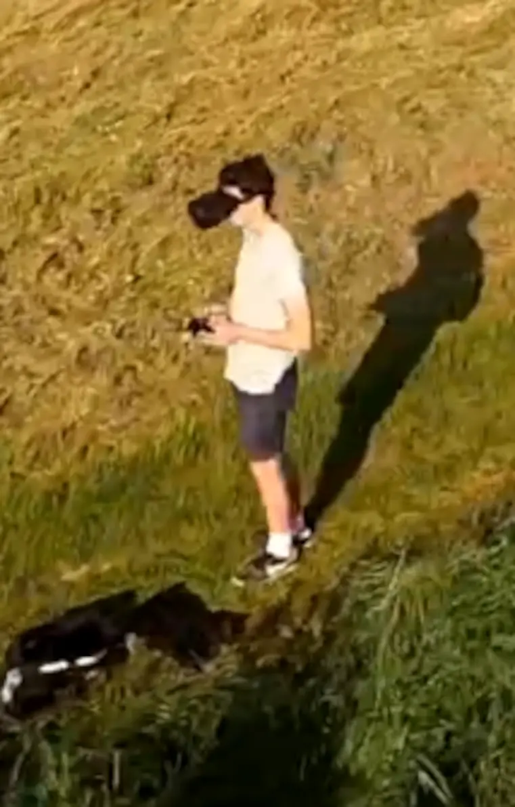
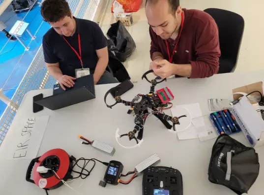
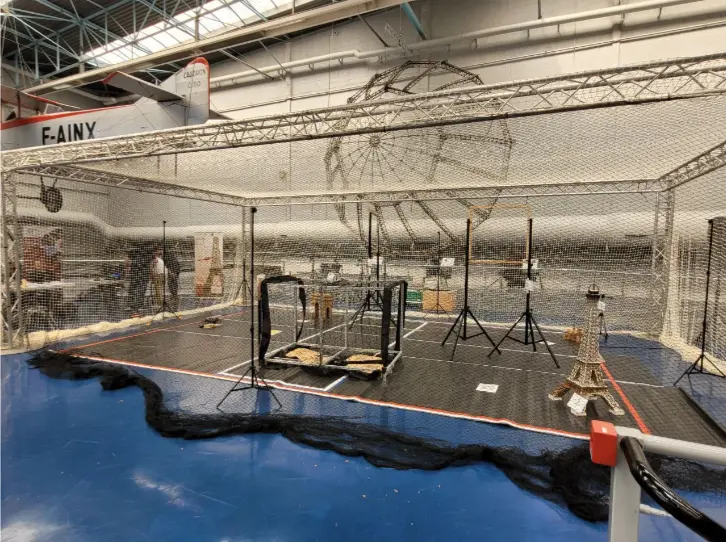
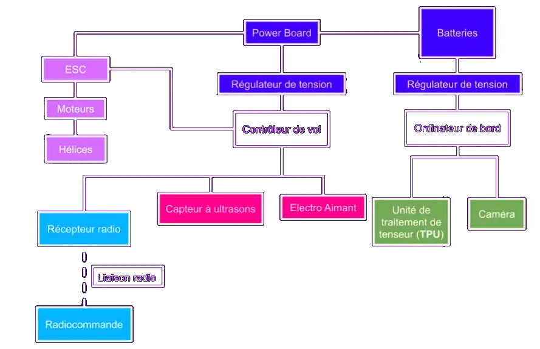

DroneLoad 2024
Le pôle drone se donne pour objectif de participer chaque année au concours DroneLoad, cofondé par Safran et Planète Sciences. Ce concours s’adressant aux étudiants propose de concevoir un drone et les systèmes associés afin de répondre à différentes missions, en lien avec des problématiques actuelles, telles que les systèmes de transport innovants ou la reconnaissance d’image. Il permet également aux étudiants de présenter oralement leur travail devant un jury composé à la fois de professionnels de l’industrie et de la recherche en matière de drones de l’entreprise Safran, que de bénévoles de Planète Sciences qui les ont aiguillés et suivis durant la réalisation de leur projet.
Les étudiants doivent donc au cours de l’année rédiger un rapport présentant leur travail et répondant à des attentes classiques du monde de l’ingénierie tels que la rédaction d’un cahier des charges ou des organigrammes fonctionnels.
Ce concours nécessite donc à la fois des compétences en mécanique qu’en électronique et informatique, et permet aux élèves de développer des compétences techniques et rédactionnelles qui leur seront utiles dans leur futur métier.
Eirspace a participé plusieurs fois au concours depuis sa création en 2017.Le drone sur lequel nous travaillons permet de transporter un objet d’un point à un autre en évitant les obstacles aussi bien au sol que dans les airs, à l’image des drones utilisés par les secouristes.

DroneLoad 2024

Drone Design Diagram
Il analyse son environnement grâce notamment à la reconnaissance d’images par Intelligence Artificielle et effectue des mesures de distance via une caméra et des capteurs à infrarouges. L’objectif est que le drone puisse être autonome et prendre des décisions de manière indépendante en cas de perte de communication, comme lors d’un brouillage. Le drone peut ainsi suivre un trajet ou reconnaître des zones de livraison, et il est doté d’un asservissement automatique de la position et de la vitesse. Toutes ces actions doivent être réalisées avec le maximum de systèmes de sécurité possibles pour pallier toute défaillance matérielle ou informatique. Le drone comporte également des fonctions d’atterrissage d’urgence, d’arrêt immédiat des moteurs et de retour automatique au point de décollage en cas de perte de contrôle.